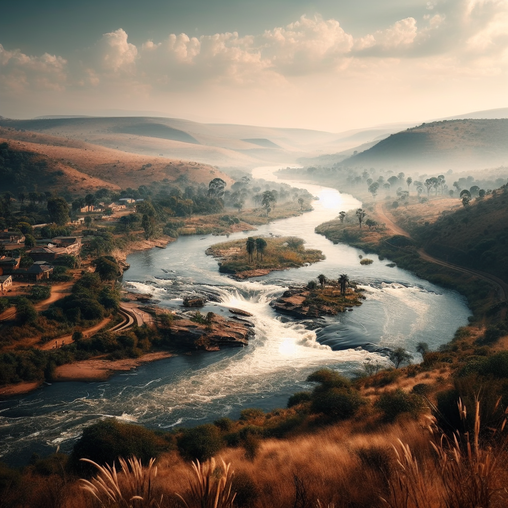

The 016 (Vaal Triangle) Gallery
Explore the beauty of the VAAl TRIANGLE and its surrounding areas through captivating images.




Explore the beauty of the VAAl TRIANGLE and its surrounding areas through captivating images.